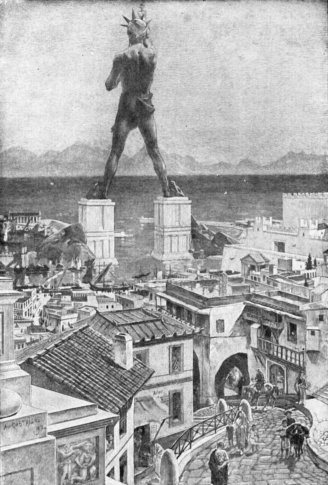
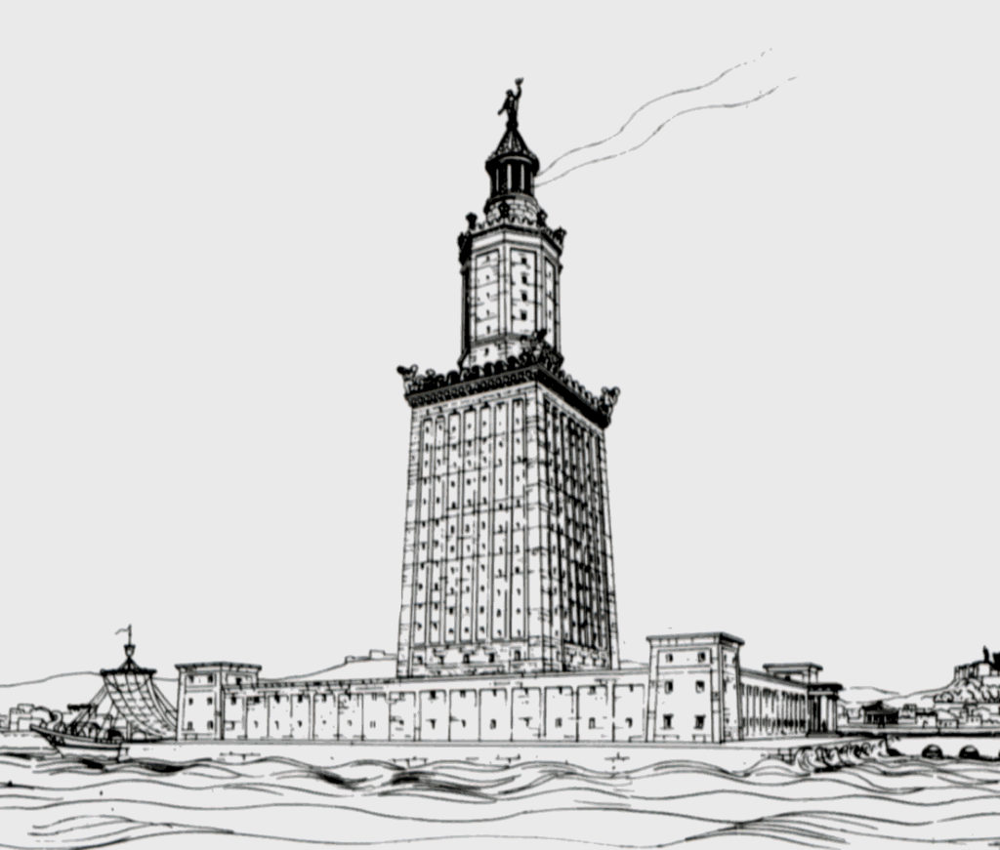
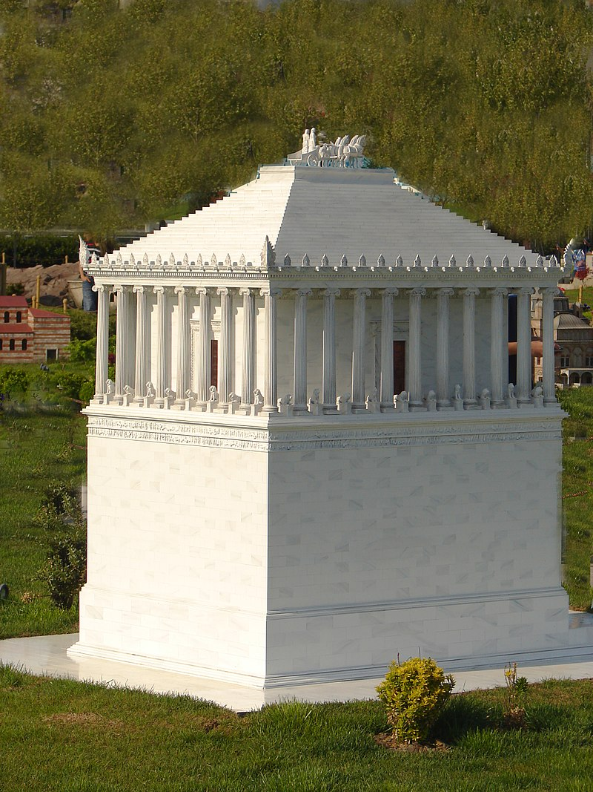
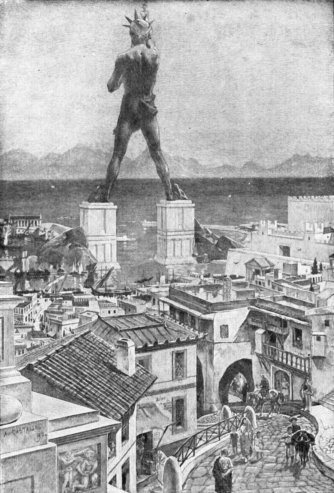
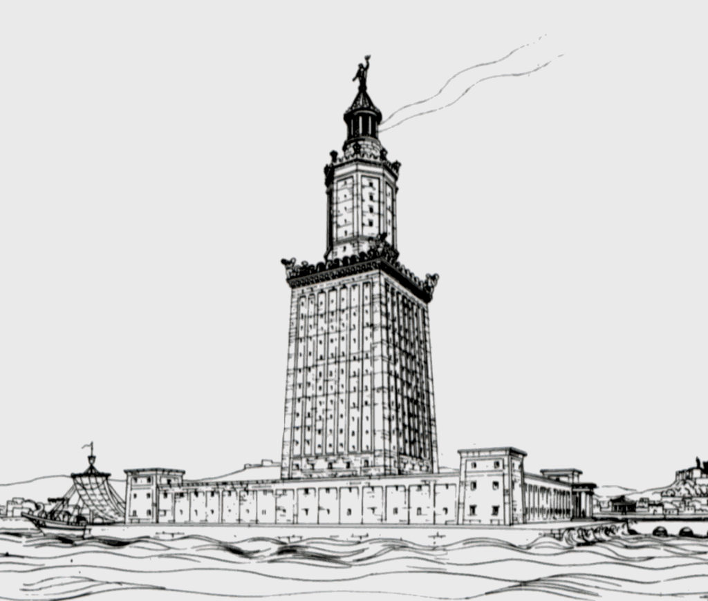
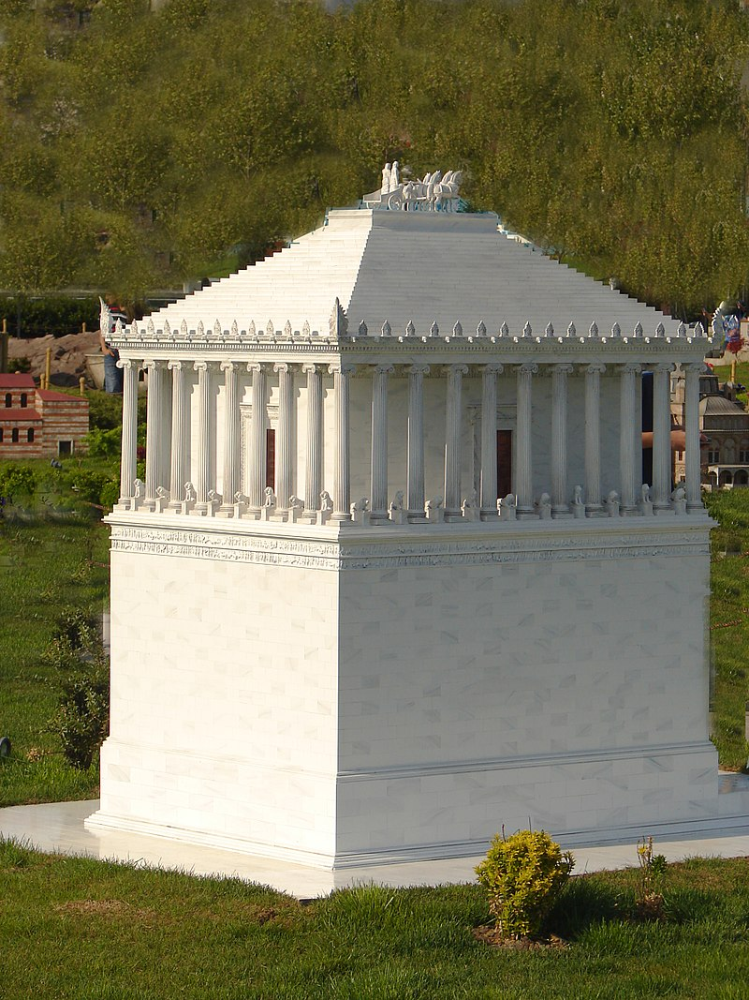

- Gran Piramide de Guiza (La unica que todavia existe)
- Coloso de Rodas
- Jardines colgantes de Babilonia
- Faro de Alejandría
- Mausoleo de Halicarnaso
- Estatua de Zeus Olimpia
- Templo de Artemisa en Éfeso
A continuacion se mostraran imagenes de las 7 maravillas del mundo antiguo

- La Gran Pirámide de Guiza (también conocida como pirámide de Keops o de Jufu) es, además de la mayor de las pirámides de Egipto, la más antigua de las siete maravillas del mundo antiguo y la única que todavía perdura.
- El coloso de Rodas era una gran estatua del dios sol griego Helios, realizada por el escultor Cares de Lindos en la isla de Rodas (Grecia) en 280 a. C. y destruida por un terremoto en 226 a. C. Es considerada una de las Siete maravillas del mundo antiguo.

- Los Jardines Colgantes de Babilonia, una de las siete maravillas del mundo antiguo, fueron construidos en el siglo VI a. C. durante el reinado de Nabucodonosor II en la antigua ciudad de Babilonia (Babel de los textos bíblicos), a orillas del río Éufrates (Mesopotamia).
- El Faro de Alejandría fue una torre construida en el siglo III a. C. durante la dinastía ptolemaica, en el reinado de Ptolomeo II (280-247 a. C.) en la isla de Faro en Alejandría, Egipto, para servir como punto de referencia del puerto y como faro, con una altura estimada de al menos 100 metros.
- El Mausoleo de Halicarnaso o el Sepulcro de Mausolo fue un monumento funerario suntuoso construido entre el año 353 y el 350 a. C.

- La Estatua de Zeus en Olimpia fue una gran escultura crisoelefantina creada por el escultor Fidias. Situada en Olimpia, (Grecia), se considera una de las Siete Maravillas del Mundo Antiguo. Si bien se han conservado los restos de los cimientos de la base de la estatua en Olimpia, la estatua en sí se ha perdido y solo partes, como los tobillos y parte del trono, se han recuperado y reconstruido gráficamente a partir de representaciones en monedas y descripciones antiguas.

- El Templo de Artemisa fue un templo ubicado en la ciudad de Éfeso, Turquía, dedicado a la diosa Artemisa, denominada Diana por los romanos. Su construcción fue comenzada por el rey Creso de Lidia y duró unos 120 años.
Todo la informacion fue tomada de:
wikipedia


